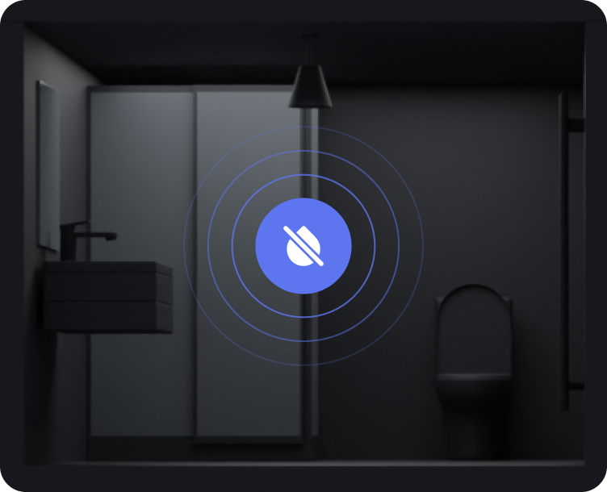

<section class="anti-flood navigation-section" id="antiFlood">
  <div class="anti-flood__container container">
    <div class="anti-flood__card card">
      <div class="anti-flood__info">
        <div class="anti-flood__title-wrapper section-title-wrapper">
          <h3 class="anti-flood__subtitle section-subtitle">Інноваційна система антипотопу</h3>
          <h2 class="anti-flood__title section-title">
            Не допустіть потопу, попередьте його
          </h2>
        </div>
        <p class="anti-flood__text text">Новітня розробка від Tuya керується віддалено через телефон, а також працює зі
          сценаріями автоматизації. Розумний кран попередить потоп, зупинивши подачу води, якщо тиск у системі вище норми,
          або надішле вам повідомлення, якщо води у системі немає.</p>
        <button class="anti-flood__button button blue consultation" type="button">
          <span>Я хочу таку функцію</span>
          
        </button>
      </div>
      <div class="anti-flood__image">
        
      </div>
    </div>
  </div>
</section>